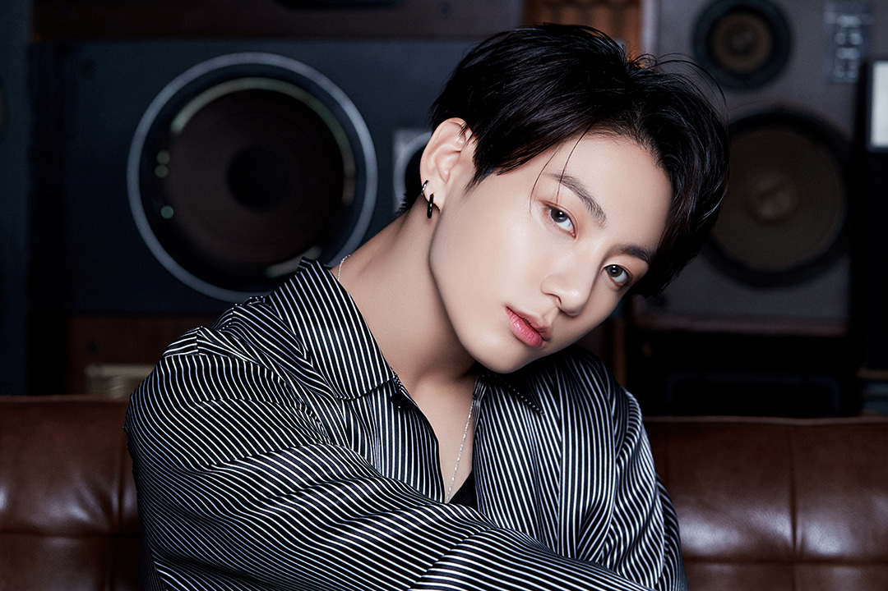
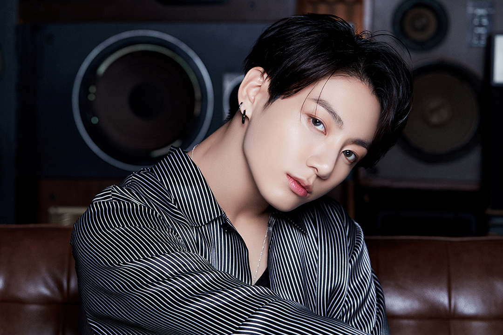

Jungkook short for JK, is the main vocalist, center,
lead dancer, visual and maknae (youngest member) of BTS.
The well known for: His honey vocals, sweet smile and beautiful features.
FUN FACT: He is almost good at everything he does.
Let it be boxing to painting or dancing to singing
he is an ace in all.
Famous line: "Night apple is poison apple. But I'm ok. Because I'm JK."
AKA: Junkookie, JayKay, Golden Maknae.
Fun fact: He owns his own studio called 'Golden Closet' (Golden Closet Films). The name comes from Jungkook's old dorm room,
which was basicallya big walk-in closet and the first part of his nickname, Golden Maknae.
This is where he recorded his covers and such before moving to the new current dorm.
Hobbies: He likes filming and editing videos (G.C.F), boxing and basically anything he is interested in.
He tries out new things and he puts all of his attention to it by doing it the best way posible.
Jungkook has the smoothest and soothing vocals of the team but,he also helps the team produce a few songs.
He is currently working on his mixtape but he also has released a few songs with the whole team that he produced himself.
He helped produce songs like"Love is not over", which was back in 2015 and"Magic shop", in 2018.
In 2020, he released two other produced song which were supposed to be in his upcoming mixtape. "Your Eyes Tell" was a Japanese song released along with their Album Map of the Soul: 7 ~ The Journey ~ and another one in the new Album BE which was "Stay".
His songs are known to have the best power to heal and spread love.
Jungkook cranked up the Festa 2020 party on Thursday (June 4) with hisfirst solo release,
the ethereal, jazzy ballad "Still With You." When asked, "Because it’s Festa,
I thought about writing a song to show my sincere feelings toward ARMY" he stated.
JK usually releases ong covers that blow away all the social media platforms even
when he releases them for free. Some of his famous covers are:
Nothing Like Us , 2U ,
Only then , Ending Scene, 10000 Hours
Although he hasnt produced any solo song except for 'Still With You',
he promised to release his mixtape soon and is working on the songs himself.
A perfectionist never fails to amaze us.
Being the Vocalist he is, he's truly such a powerful center
when leading their choreographies. The second he comes on screen
his presence commands attention due to the amazing "performer" he is.
Jungkook has been known to affect consumers’ behavior, with fans oftenflocking
to buy products he promotes.
This phenomenon even has a name: The Jungkook Effect.
Begin, Euphoria and My Time which are his solos from the
albums of the group show the importance of his voice in the team.
Everyone falls for his innocent and sweet bunny-like smile with those
big doe eyes that show how much of a soft boy he is.
But what you wont notice is how his body line and tattoos lie within those black
baggy-clothes that makes him the baddest Gen-Z E-boy that he actually is.
Jungkook's first love is ARMY and so is he their first one.
Even after getting many invites from other companies, Jungkook Joined BigHit Entertainment, knowing and trusting the one rapper he loved and found inspiration. The rapper being "RM" himself.
"We all have lots to pitch in, there’s no knowing what will come but hard work will get us somewhere." - Jungkook, 2017.04.03, USA.
Jungkook, even according to himself, is a manifestation of the personalities of his six older brothers in Bangtan - that is, he is a mix of the best character traits of Bangtan.
Brought up and raised by them since he was 15, the rest of them brought a young middle schooler so introverted he would cry when asked to sing and shower only after everyone was asleep
to the gorgeous, bunny-smiled main vocalist we know today as the Golden Maknae.
He shoots his own vlogs or a small film to the places he travels with his bandmates and films it with his point of view or perspective.
G.C.F's are a treat for Army's since it is the world from Jungkook's eyes.
 
